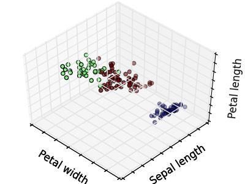
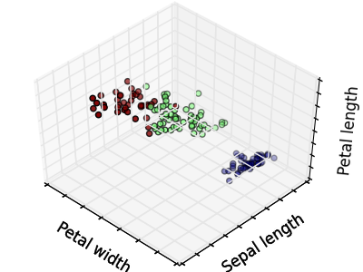
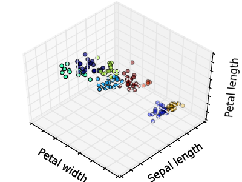
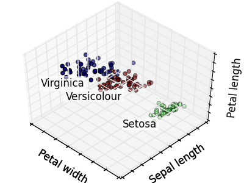
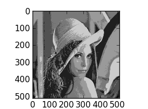
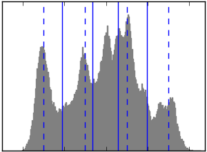
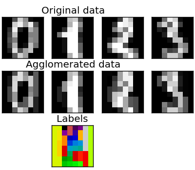
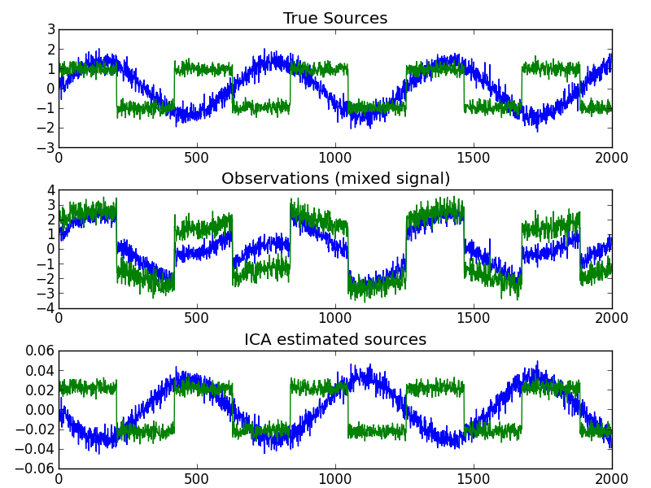

2.2.4. Unsupervised learning: seeking representations of the data¶
2.2.4.1. Clustering: grouping observations together¶
The problem solved in clustering
Given the iris dataset, if we knew that there were 3 types of iris, but did not have access to a taxonomist to label them: we could try a clustering task: split the observations into well-separated group called clusters.
2.2.4.1.1. K-means clustering¶
Note that there exist a lot of different clustering criteria and associated algorithms. The simplest clustering algorithm is K-means.
>>> from sklearn import cluster, datasets
>>> iris = datasets.load_iris()
>>> X_iris = iris.data
>>> y_iris = iris.target
>>> k_means = cluster.KMeans(n_clusters=3)
>>> k_means.fit(X_iris)
KMeans(copy_x=True, init='k-means++', ...
>>> print(k_means.labels_[::10])
[1 1 1 1 1 0 0 0 0 0 2 2 2 2 2]
>>> print(y_iris[::10])
[0 0 0 0 0 1 1 1 1 1 2 2 2 2 2]
Warning
There is absolutely no guarantee of recovering a ground truth. First, choosing the right number of clusters is hard. Second, the algorithm is sensitive to initialization, and can fall into local minima, although in the sklearn package we play many tricks to mitigate this issue.
|  |  |  |
| Bad initialization | 8 clusters | Ground truth |
Don’t over-interpret clustering results
Application example: vector quantization
Clustering in general and KMeans, in particular, can be seen as a way of choosing a small number of exemplars to compress the information. The problem is sometimes known as vector quantization. For instance, this can be used to posterize an image:
>>> import scipy as sp
>>> try:
... lena = sp.lena()
... except AttributeError:
... from scipy import misc
... lena = misc.lena()
>>> X = lena.reshape((-1, 1)) # We need an (n_sample, n_feature) array
>>> k_means = cluster.KMeans(n_clusters=5, n_init=1)
>>> k_means.fit(X)
KMeans(copy_x=True, init='k-means++', ...
>>> values = k_means.cluster_centers_.squeeze()
>>> labels = k_means.labels_
>>> lena_compressed = np.choose(labels, values)
>>> lena_compressed.shape = lena.shape
|  |  | ||
| Raw image | K-means quantization | Equal bins | Image histogram |
2.2.4.1.2. Hierarchical agglomerative clustering: Ward¶
A Hierarchical clustering method is a type of cluster analysis that aims to build a hierarchy of clusters. In general, the various approaches of this technique are either:
- Agglomerative - bottom-up approaches, or
- Divisive - top-down approaches.
For estimating a large number of clusters, top-down approaches are both statistically ill-posed and slow due to it starting with all observations as one cluster, which it splits recursively. Agglomerative hierarchical-clustering is a bottom-up approach that successively merges observations together and is particularly useful when the clusters of interest are made of only a few observations. Ward clustering minimizes a criterion similar to k-means in a bottom-up approach. When the number of clusters is large, it is much more computationally efficient than k-means.
2.2.4.1.2.1. Connectivity-constrained clustering¶
With Ward clustering, it is possible to specify which samples can be clustered together by giving a connectivity graph. Graphs in the scikit are represented by their adjacency matrix. Often, a sparse matrix is used. This can be useful, for instance, to retrieve connected regions (sometimes also referred to as connected components) when clustering an image:

###############################################################################
# Generate data
lena = sp.misc.lena()
# Downsample the image by a factor of 4
lena = lena[::2, ::2] + lena[1::2, ::2] + lena[::2, 1::2] + lena[1::2, 1::2]
X = np.reshape(lena, (-1, 1))
###############################################################################
# Define the structure A of the data. Pixels connected to their neighbors.
connectivity = grid_to_graph(*lena.shape)
###############################################################################
# Compute clustering
print("Compute structured hierarchical clustering...")
st = time.time()
n_clusters = 15 # number of regions
ward = Ward(n_clusters=n_clusters, connectivity=connectivity).fit(X)
label = np.reshape(ward.labels_, lena.shape)
print("Elapsed time: ", time.time() - st)
print("Number of pixels: ", label.size)
print("Number of clusters: ", np.unique(label).size)
2.2.4.1.2.2. Feature agglomeration¶
We have seen that sparsity could be used to mitigate the curse of dimensionality, i.e an insufficient amount of observations compared to the number of features. Another approach is to merge together similar features: feature agglomeration. This approach can be implemented by clustering in the feature direction, in other words clustering the transposed data.
>>> digits = datasets.load_digits()
>>> images = digits.images
>>> X = np.reshape(images, (len(images), -1))
>>> connectivity = grid_to_graph(*images[0].shape)
>>> agglo = cluster.WardAgglomeration(connectivity=connectivity,
... n_clusters=32)
>>> agglo.fit(X)
WardAgglomeration(compute_full_tree='auto',...
>>> X_reduced = agglo.transform(X)
>>> X_approx = agglo.inverse_transform(X_reduced)
>>> images_approx = np.reshape(X_approx, images.shape)
transform and inverse_transform methods
Some estimators expose a transform method, for instance to reduce the dimensionality of the dataset.
2.2.4.2. Decompositions: from a signal to components and loadings¶
Components and loadings
If X is our multivariate data, then the problem that we are trying to solve is to rewrite it on a different observational basis: we want to learn loadings L and a set of components C such that X = L C. Different criteria exist to choose the components
2.2.4.2.1. Principal component analysis: PCA¶
Principal component analysis (PCA) selects the successive components that explain the maximum variance in the signal.
The point cloud spanned by the observations above is very flat in one direction: one of the three univariate features can almost be exactly computed using the other two. PCA finds the directions in which the data is not flat
When used to transform data, PCA can reduce the dimensionality of the data by projecting on a principal subspace.
>>> # Create a signal with only 2 useful dimensions
>>> x1 = np.random.normal(size=100)
>>> x2 = np.random.normal(size=100)
>>> x3 = x1 + x2
>>> X = np.c_[x1, x2, x3]
>>> from sklearn import decomposition
>>> pca = decomposition.PCA()
>>> pca.fit(X)
PCA(copy=True, n_components=None, whiten=False)
>>> print(pca.explained_variance_)
[ 2.18565811e+00 1.19346747e+00 8.43026679e-32]
>>> # As we can see, only the 2 first components are useful
>>> pca.n_components = 2
>>> X_reduced = pca.fit_transform(X)
>>> X_reduced.shape
(100, 2)
2.2.4.2.2. Independent Component Analysis: ICA¶
Independent component analysis (ICA) selects components so that the distribution of their loadings carries a maximum amount of independent information. It is able to recover non-Gaussian independent signals:
>>> # Generate sample data
>>> time = np.linspace(0, 10, 2000)
>>> s1 = np.sin(2 * time) # Signal 1 : sinusoidal signal
>>> s2 = np.sign(np.sin(3 * time)) # Signal 2 : square signal
>>> S = np.c_[s1, s2]
>>> S += 0.2 * np.random.normal(size=S.shape) # Add noise
>>> S /= S.std(axis=0) # Standardize data
>>> # Mix data
>>> A = np.array([[1, 1], [0.5, 2]]) # Mixing matrix
>>> X = np.dot(S, A.T) # Generate observations
>>> # Compute ICA
>>> ica = decomposition.FastICA()
>>> S_ = ica.fit(X).transform(X) # Get the estimated sources
>>> A_ = ica.get_mixing_matrix() # Get estimated mixing matrix
>>> np.allclose(X, np.dot(S_, A_.T))
True